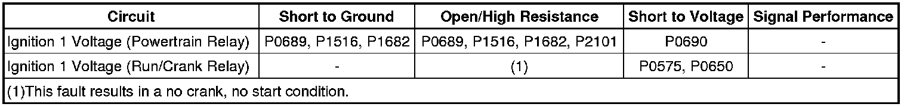
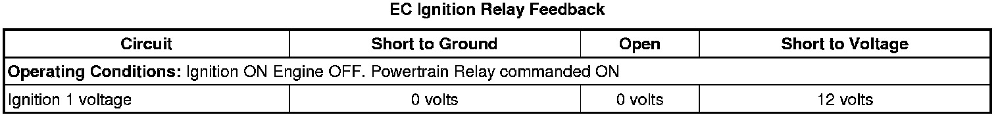
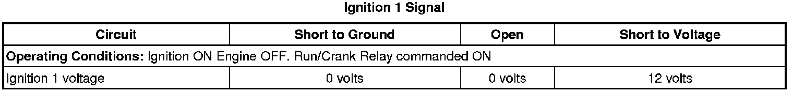

P1682
DTC P1682
Diagnostic Instructions
* Perform the Diagnostic System Check - Vehicle (Initial Inspection and Diagnostic Overview) prior to using this diagnostic procedure.
* Review Strategy Based Diagnosis (Initial Inspection and Diagnostic Overview) for an overview of the diagnostic approach.
* Diagnostic Procedure Instructions (Initial Inspection and Diagnostic Overview)provides an overview of each diagnostic category.
DTC Descriptor
DTC P1682
- Ignition 1 Switch Circuit 2
Diagnostic Fault Information

Typical Scan Tool Data


Circuit/System Description
There are 2 ignition 1 voltage circuits supplied to the engine control module (ECM). The first ignition 1 voltage circuit is provided by the powertrain relay, through a fuse. This ignition 1 voltage circuit supplies power to all the internal ECM circuits associated with the throttle actuator control (TAC) operation. The run/crank relay provides the second ignition 1 voltage circuit to the ECM, through a fuse. This ignition 1 voltage provides power to other internal ECM circuits, except those associated with TAC operation. The ECM continuously monitors the voltage level difference between the 2 circuits.
Conditions for Running the DTC
* The ignition is in the Unlock/Accessory, Run, or Crank position.
* System voltage is more than 5.23 volts.
* Powertrain relay is commanded ON.
* DTC P1682 runs continuously when the above conditions are met.
Conditions for Setting the DTC
The ignition 1 voltage of the Run/Crank relay is more than 3 volts different than the ignition 1 voltage of the powertrain relay for more than 1 second.
Action Taken When the DTC Sets
* DTC P1682 is a Type A DTC.
* The engine may operate in a reduced engine power mode.
Conditions for Clearing the DTC
DTC P1682 is a Type A DTC.
Diagnostic Aids
This test procedure requires that the vehicle battery has passed a load test and is completely charged. Refer to Battery Inspection/Test (Battery Inspection/Test) .
Reference Information
Schematic Reference
* Engine Controls Schematics (Electrical Diagrams)
* Power Distribution Schematics (Power Distribution Diagrams)
Connector End View Reference
Component Connector End Views (Connector Views)
Description and Operation
Engine Control Module Description (Engine Control Module Description)
Electrical Information Reference
* Circuit Testing (Component Tests and General Diagnostics)
* Connector Repairs (Component Tests and General Diagnostics)
* Testing for Intermittent Conditions and Poor Connections (Component Tests and General Diagnostics)
* Wiring Repairs (Component Tests and General Diagnostics)
* Probing Electrical Connectors (Component Tests and General Diagnostics)
* Electrical Center Identification Views (Application and ID)
DTC Type Reference
Powertrain Diagnostic Trouble Code (DTC) Type Definitions (Diagnostic Trouble Code Descriptions)
Scan Tool Reference
Control Module References (Programming and Relearning)for scan tool information
Circuit/System Verification
1. If DTCs P0685, P0690, or B1380 are set, diagnose those DTCs first.
2. Ignition ON, engine OFF, observe the Ignition 1 signal, and the EC Ignition Relay Feedback Signal parameters, on the scan tool. Both parameter values should display no more than 3 volts difference, between the 2 parameters.
3. Ignition OFF, observe the ignition 1 voltage signal parameter, on the scan tool. The parameter value should be 0 volts, before the ECM powers down.
4. Engine running, observe the DTC information with a scan tool. DTC P1682 should not set.
5. Operate the vehicle within the Conditions for Running the DTC. You may also operate the vehicle within the conditions that you observed from the Freeze Frame/Failure Records data.
Circuit/System Testing
1. Ignition ON, observe the Ignition 1 Signal and EC Ignition Relay Feedback Signal scan tool parameters to determine which is less than B+.
2. Ignition OFF, remove the relay that corresponds to the scan tool parameter that is less than B+.
Important: 6 ohms or greater in the circuit/underhood fuse block will cause the DTC to set.
3. Ignition On, connect a 3A fused jumper wire between B+ and the applicable ignition 1 circuit terminal. Verify that the applicable scan tool parameter displays B+.
• If the applicable scan tool parameter is less than the specified value, test the ignition 1 circuit for an open/high resistance. If the circuit tests normal, replace the ECM.
4. If all circuits test normal, test or replace the applicable relay.
Repair Instructions
Perform the Diagnostic Repair Verification (Verification Tests) after completing the diagnostic procedure.
Control Module References (Programming and Relearning)for ECM replacement, setup, and programming